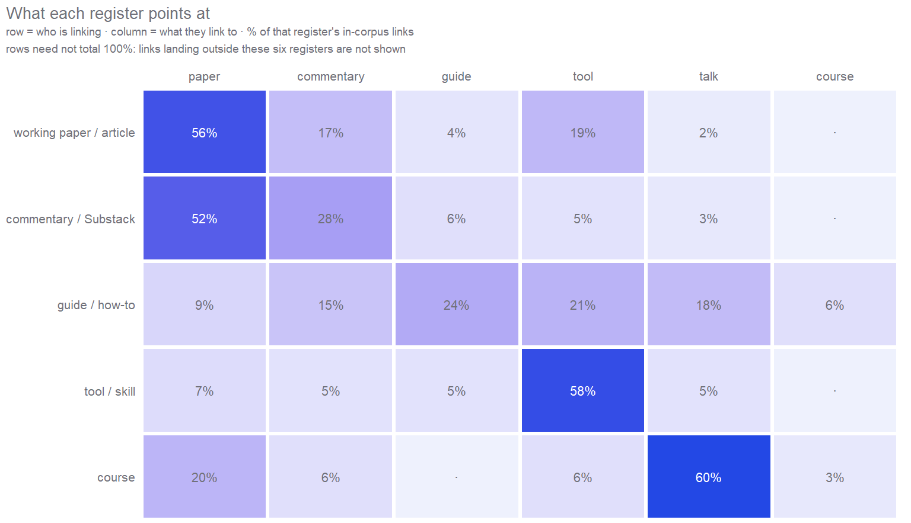
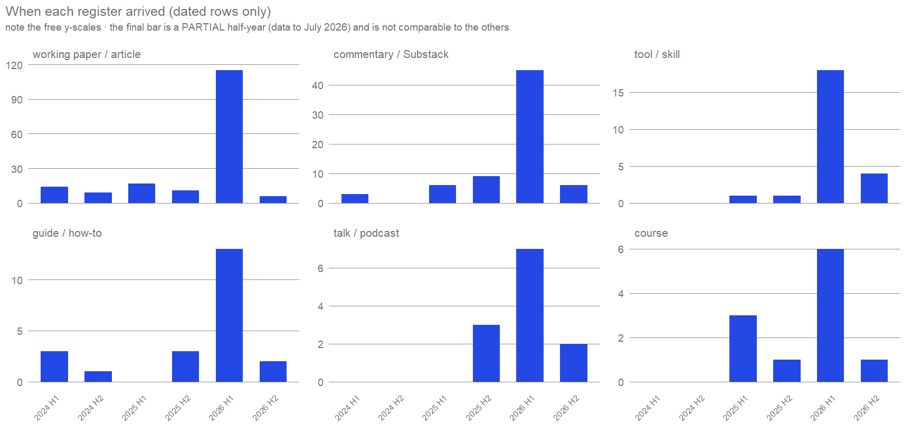
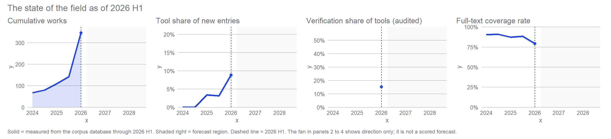

How Economics Absorbed AI
A field map of what is being argued, where it is being argued, and where that leaves you
Scenario
This is a map of one research field, economics meeting AI, built from a collection of 661 resources, 530 of them with their full text attached. One thing about the collection is hard to miss. This field argues in several registers at once, in papers and Substacks and tools and podcasts, and those registers move at different speeds, carry different knowledge, and barely cite each other. Understanding that structure explains more than any single paper in it does. The first half maps the structure and how it came about. The second forecasts the next two to five years with numbered probabilities, and ends with where a person might actually stand.
The collection did not come from one search. A pipeline watches where this field publishes, which means journal sites and working paper series, but also newsletters, personal websites, GitHub repositories, course pages, and recorded talks. It fetches full text wherever that can be legitimately obtained and files everything in one database, alongside material added by hand. Every number below about the past is recomputed from that database at build time. Nothing is typed from memory. Claims about the future are numbered from P1, 18 in all, each one dated and carrying a probability. What this map cannot verify is set out on the Method page, which also records a date repair made in late July 2026 that moved several works between periods.
It is not the field. It is one curator’s map of the field, and like any map it shows the mapmaker’s routes as well as the territory.
Part 1 · The structure
The field argues in six registers
Sort the collection by what kind of thing each item is, and a structure appears that no reading list would show you. These are not topics. They are registers, which is to say distinct formats, each with its own speed, its own audience, and its own idea of what counts as a contribution.
| Register | Rows | Median length | Readable in full | Carries a date | No date by nature |
|---|---|---|---|---|---|
| working paper / article | 245 | 14,895 w | 69% | 82% | 0% |
| tool / skill | 114 | 1,397 w | 79% | 21% | 79% |
| commentary / Substack | 104 | 1,395 w | 88% | 75% | 0% |
| other | 66 | 1,113 w | 80% | 30% | 3% |
| talk / podcast | 50 | 10,090 w | 96% | 28% | 2% |
| guide / how-to | 45 | 1,376 w | 98% | 51% | 0% |
| course | 21 | 1,251 w | 95% | 71% | 29% |
| thread | 14 | 56 w | 86% | 79% | 0% |
Read that table across, because two of its columns run the opposite way to what you would expect.
The most authoritative register is the least readable. Working papers are the largest group in the collection and the only one that confers formal credit, yet only 69% of them can be read in full, against 98% of guides and 96% of recorded talks. The reason is dull and it matters. The research frontier sits behind embargoes and paywalls, while the informal layer is open by default and readable by machine out of habit. Anyone building on this literature with software, and increasingly that is everyone, finds the gray literature easier to obtain than the refereed one.
The fastest register has no dates at all. 79% of tools carry no publication date, and this is not missing data. A tool homepage, a living guide, a maintained instruction file is revised rather than published. It has no issue date and never will. So the layer of this field that moves fastest is exactly the layer a timeline cannot see, and every time series on this page under represents it by construction. That is worth holding onto. The register with the most current knowledge is the one with the weakest paper trail.
And length does not track importance. The span runs from a thread at 56 words to a working paper at 14,895. The surprise is the talk. A recorded interview transcribes to about 10,090 words, which is paper length. The podcast is not a soundbite format in this field. It is long form argument that happens not to be typeset, and as the last section of this history shows, it is where senior people say things they will not put in a paper.
One of each register
Anton Korinek · Generative AI for Economic Research: Use Cases and Implications for Economists (Journal of Economic Literature)
Anton Korinek · Generative AI for Economic Research
Pedro H. C. Sant’Anna · My Claude Code Setup
Claes Bäckman · AI Research Feedback: Claude Code Skills for Peer Review
Daron Acemoglu · Nobel Laureate Daron Acemoglu: How AI Will Affect the Economy
These labels have not been audited, and they carry the argument. The tool classification on this page was hand checked against a fixed list, with its precision and recall reported and its mistakes named. Register assignment got none of that treatment, even though everything in Part 1 rests on it. There is no second coder and no agreement statistic, so the reader has no way to tell how much of the structure above is the field and how much is one person’s filing habit.
The residual is where that shows. 66 records, about 10% of the collection, sit in other, and that bucket is not one thing: it spans 5 of the collection’s 6 categories, from commentary to courses to tools. A residual that large and that mixed is a sign the vocabulary has a gap, not that the field has an “other”. Fixing it properly means a codebook and a second coder, which is owed alongside the labels the Method page already promises as a dataset.
The registers barely cite each other
Registers would be a curiosity if they were only packaging. They are not, because the collection also records what every document links to. Restricting to links that land on something else in the collection gives a rough map of who points at whom.
Each register is largely talking to itself. 52% of a paper’s in corpus links land on another paper. 60% of a tool’s land on another tool. Guides point at guides and at tools. This is what a set of parallel conversations looks like, and it is the single most useful thing on this page.
The interesting part is the asymmetry. Commentary and Substack writing point up at the formal literature, and 51% of what an essay links to is a paper. The formal literature does not point back. Only 5% of a paper’s links reach a guide. So method knowledge flows into the informal layer, gets refined there, and has no way back into the citation economy. A researcher can produce the most useful methodological work of the year, and the machinery that turns contribution into credit will not see it.
That asymmetry is the field’s central inefficiency, and most of what follows, including where the opportunities are, comes out of it.
How much of this is actually observed
Every percentage in this section has the same denominator: links that land on something already in the collection. That is a small and non random slice of the linking a work actually does. Across the collection, 7,912 external links leave a work and only 646 of them, 8.2%, land somewhere the map can see.
Per register it is thinner still. The paper to paper share above rests on 69 observable edges out of 2,407, or 2.9% of what papers point at. The tool to tool share rests on 41. For recorded talks the observable count is 0, so this page has nothing to say about how talks link and should not be read as though it does.
Worse, the visible slice is not a sample of the field’s links. It is exactly the subset pointing at things the curator already collected, which is the endogeneity the forecasts guard against and the descriptive half did not. Dropping either acquisition source collapses the denominator rather than moving the share: the paper to paper figure falls to 1 observable edge without the hand added source, and the tool figure to 0. Read this section as the shape of a small visible core, not as a measurement of the field. The full table is on the Method page.
One channel is opening. 21% of what papers link to is now a tool, which is papers starting to cite software as something they depend on. Software is the first informal artifact to get a citation path. If a reporting standard or a validation package becomes citable the same way, the loop closes. Whether it does is what the forecast below is mostly about.
The bridge is 34 people
If the registers barely cite each other, who connects them? The collection credits 626 distinct people. Exactly 34 of them are credited in two or more registers, and 10 in three or more.
| Person | Registers |
|---|---|
| Aniket Panjwani | 5 |
| Anton Korinek | 5 |
| Paul Goldsmith-Pinkham | 4 |
| Claes Backman | 3 |
| Daron Acemoglu | 3 |
| Elliott Ash | 3 |
| Erik Brynjolfsson | 3 |
| Joshua Gans | 3 |
| Kevin Bryan | 3 |
| Scott Cunningham | 3 |
That is the broker class, counted. Fewer than one credited person in ten writes in more than one register, and the handful who write in three or more are, not by coincidence, the names this field cites most. Korinek’s guide is a Journal of Economic Literature article kept alive on its own site, because the knowledge in it goes stale the way software does. Panjwani runs a newsletter, a library, and tutorials. Goldsmith-Pinkham publishes an identification paper and a Substack showing his own diffs. Brynjolfsson appears as a QJE author, a talk, and an indicator platform.
The scarce skill here is not AI and it is not economics. It is being at home in more than one register at once, and the measurement says roughly nine per cent of credited people are.
There is a catch in that advice, and it only shows up when you cross the bridge list against the credit list. Of the 10 people who write in three or more registers, 7 are also among the 10 most credited people in the whole collection. The bridge is not a separate population from the establishment. It is the establishment, writing in a second register.
That turns the obvious reading on its head. The informal layer looks like an open frontier where anyone can build a reputation, and it is, but the people supplying it are overwhelmingly the ones who no longer need it. Writing where no credit accrues is cheap if you already have tenure and expensive if you are counting publications. So the bridge has a seniority gate that nobody put there on purpose, and “just write in a second register” is advice whose cost falls almost entirely on the people least able to pay it. Any honest advice section has to say that out loud, and Part 5 does.
The bridge, in practice
Anton Korinek · AI Agents for Economic Research (NBER WP 34202)
Aniket Panjwani · The AI Economist Newsletter
Aniket Panjwani · The AI Economist Library
Paul Goldsmith-Pinkham · From an Empty Folder to a Figure
Paul Goldsmith-Pinkham · Research in the Time of AI
Elliott Ash · Language Models for Economics (AEA 2026, Ash)
What the registers are made of
Knowing how the registers connect is one thing. Looking at what is actually inside them turns up two more splits, and both matter more than the format story on its own.
The literature studies one company’s product. The profession runs on another’s. Count which model vendor each document’s own text talks about. Among papers the OpenAI stack leads 111 documents to 61 out of 169 with full text. Among guides it goes the other way, 31 to 24 out of 44, and 23 of the 122 guides and tools name the Anthropic stack without mentioning OpenAI at all. ChatGPT is what the field studies, because it is what the public adopted and what the usage data covers. Claude is what the field works in, because that is where the agent tooling landed first.
The result is a dependency nobody in this collection writes about. The whole written down method layer, the instruction files and skills and workflow guides that Part 2 shows carrying the field’s practical knowledge, is written against one company’s product. That knowledge is real, but a good part of it is really knowledge of one vendor’s menus and conventions rather than technique you could carry anywhere, so it goes stale on that vendor’s release schedule rather than on the field’s. Set that next to Acemoglu’s own point later in this map, that cheap open weight rivals could leave the labs unprofitable even if the technology works, and the risk is plain. The profession has invested heavily in know how that lives inside a commercial product line. P15 is the bet on whether that dependence breaks.
And the two registers are not covering the same subject. Sort the topic tags by the register each one sits in most heavily, and the split turns out to be about content rather than style.
| Topic | Lives mostly in | Share | Tagged rows |
|---|---|---|---|
| claude | guide / how-to | 49% | 37 |
| labor | working paper / article | 47% | 30 |
| peer-review | tool / skill | 45% | 20 |
| coding | guide / how-to | 41% | 64 |
This table used to include topics tagged on as few as twelve resources, where reclassifying a single record moves the share by eight points. It now shows only topics with at least 20 tagged rows, which suppresses 5 of them — the site’s own read the count, not the share rule, applied to itself.
Productivity, growth and labour, the questions a finance ministry would ask, sit overwhelmingly in the register that is embargoed and 57% readable. Coding, peer review and the Claude specific practice material sit in the register that is open and 96% readable. So the access gap is not just an inconvenience about paywalls. It decides which questions each audience gets to see at all. A policymaker reading the citable literature meets the welfare debate and almost none of the practice revolution. A practitioner reading the open web meets the reverse and could easily conclude the field’s main topic is tooling. Neither is reading a distorted version of one conversation. They are reading two different fields that happen to share a name.
What the registers run on
Zoe Hitzig, Maxim Massenkoff, Eva Lyubich, Shaoyi Zhang, Ryan Heller, Peter McCrory · Agentic coding and persistent returns to expertise (Anthropic)
Thomas Lyttelton, Maxim Massenkoff, Nathan Wilmers · Coding Agents in the Social Sciences (Anthropic Economic Research)
Aaron Chatterji, Thomas Cunningham, David J. Deming, Zoe Hitzig, Christopher Ong, Carl Yan Shan, Kevin Wadman · How People Use ChatGPT (NBER WP 34255)
Claes Bäckman · Claude Code in VS Code — For Academic Economists: A Practical Guide
Alexander Bick, Adam Blandin, David Deming, Nicola Fuchs-Schündeln, Jonas Jessen · Why Does AI Adoption Differ So Much across Countries?
Part 2 · How it got this way
The register structure was not designed. It fell out of a sequence, and the sequence is worth walking because it explains which register owns which kind of knowledge today. Dates below are the publisher’s own, and roughly 41.4% of the collection carries no usable date at all, so read this as the shape of the record rather than a census of the field.

2023 to 2024 · the guide arrives before the literature
The first thing that lasted was not a finding. It was a manual. Anton Korinek’s Generative AI for Economic Research appeared in the Journal of Economic Literature in late 2023 and was then kept alive on its own site, updated on a cycle faster than journals move, because the tooling it described would not sit still. A journal article behaving like software is the whole story in one object. Once producing advice got cheap, keeping it current stopped fitting the publication cycle.
The theory arrived alongside it. Daron Acemoglu’s The Simple Macroeconomics of AI in May 2024 put a number on the decade, and Brynjolfsson, Li and Raymond’s Generative AI at Work found a real productivity gain in a customer support centre, concentrated among the least experienced workers. That paper also shows why this page counts works rather than rows. It circulated from 2023 and reached the Quarterly Journal of Economics in 2025, so the finding is older than the place it takes on any timeline built from publication dates.
The tension that has never resolved was visible straight away. Gains for the individual worker looked real. Gains at the level of the firm kept failing to appear. Economists have seen this film before, and the explanations on offer, short run losses before long run gains, revenue that arrives late, missing changes in how firms are organised, all come to the same thing. The machine is cheap and the things that make it pay are not.
Who made what
Kevin Bryan · A User’s Guide to GPT and LLMs for Economic Research
Anton Korinek · Generative AI for Economic Research: Use Cases and Implications for Economists (Journal of Economic Literature)
David Autor, Anton Korinek · Impact of Language Models on Cognitive Automation (Brookings)
Tyler Cowen · Prompts for Economists (Marginal Revolution)
Daron Acemoglu · The Simple Macroeconomics of AI (NBER WP 32487)
Melissa Dell · Deep Learning for Economists
Anton Korinek · LLMs Learn to Collaborate and Reason (JEL)
John Horton · LLM Agents and Homo Silicus
Erik Brynjolfsson, Danielle Li, Lindsey Raymond · Generative AI at Work (Quarterly Journal of Economics)
2025 H1 · the method gets specified
The record for this half year is thin, 30 dated works against 204 in the first half of 2026, and the thinness tells you something. The method was being written down faster than results were coming in.
The pivotal document is Jens Ludwig, Sendhil Mullainathan and Ashesh Rambachan’s applied econometric framework for large language models, from January 2025, which took the loose practice of using a model to label things and gave it a shape an economist could argue with, namely what the model estimates, what its error does further down the chain, and what has to be checked before any of it is believed. Kevin Bryan’s essay on AI assisted academic writing did the same for the keyboard. And the field began measuring its own uptake, with the first estimates of adoption among economists in Economics Letters.
The method came before the evidence. Before the field could argue about what AI does to the economy, it had to agree what counted as measuring it.
Who made what
Jens Ludwig, Sendhil Mullainathan, Ashesh Rambachan · Large Language Models: An Applied Econometric Framework (NBER WP 33344)
Kevin A. Bryan · AI-Assisted Academic Writing in Quantitative Social Science
Maryam Feyzollahi, Nima Rafizadeh · The Adoption of Large Language Models in Economics Research (Economics Letters)
Wei Jiang, Junyoung Park, Rachel (Jiqiu) Xiao, Shen Zhang · AI and the Extended Workday: Productivity, Contracting Efficiency, and Distribution of Rents
Joshua Gans · The Microeconomics of Artificial Intelligence
Kevin Bryan · AI and Economics Research Roundup (Afinetheorem)
2025 H2 · the split becomes visible
Two things happen at once, in different registers, and this is the moment the structure described in Part 1 sets.
In the formal register an agenda gets built. The NBER convenes a workshop on the economics of transformative AI and publishes a research agenda. Korinek follows his guide with AI Agents for Economic Research, the moment “agent” becomes a research word. Diane Coyle and John Poquiz argue in Making AI Count that measurement itself is the frontier. The first large scale usage evidence lands with How People Use ChatGPT. And the question of which direction the technology gets pushed in grows sharper. Pascual Restrepo’s We Won’t Be Missed marks the point past which steering the technology stops working and only redistribution is left.
In the informal register, almost entirely outside the journals, the actual methods start moving. Pedro Sant’Anna publishes his own working setup. Scott Cunningham works through agentic workflows in public on Substack. Claes Bäckman turns his learning curve into guides for PhD students. Aniket Panjwani teaches economists to run agents. Paul Goldsmith-Pinkham builds a figure from an empty folder in public, diffs and all.
Note what each register is carrying. The formal one is producing claims about the world. The informal one is producing knowledge about how to work. Almost none of the second kind carries a date, which is why it is nearly invisible in the chart above and why it took a link analysis rather than a timeline to see it at all.
These writers were not inventing the practice. They were translating it, from a software world that had been running agents against test suites for a year already, and the standing claim in this literature is that economics receives that practice six to eighteen months late. That figure is repeated across the informal register and it matches the shape of what is here, but it is folklore. Nothing in this collection establishes it, and this page is not going to assert a number it has not measured. It can be measured, and the last section of Part 5 says how.
Who made what
Anton Korinek · AI Agents for Economic Research (NBER WP 34202)
Erik Brynjolfsson, Anton Korinek, Ajay K. Agrawal · A Research Agenda for the Economics of Transformative AI (NBER WP 34256)
Anton Korinek · Economics of Transformative AI Workshop (NBER, 2025)
Diane Coyle, John Poquiz · Making AI Count: The Next Measurement Frontier (NBER WP 34330)
Aaron Chatterji, Thomas Cunningham, David J. Deming, Zoe Hitzig, Christopher Ong, Carl Yan Shan, Kevin Wadman · How People Use ChatGPT (NBER WP 34255)
Pascual Restrepo · We Won’t Be Missed: Work and Growth in the AGI World (NBER WP 34423)
Susan Athey, Fiona Scott Morton · Artificial Intelligence, Competition, and Welfare (NBER WP 34444)
Anton Korinek · Generative AI for Economic Research
Pedro H. C. Sant’Anna · My Claude Code Setup
Scott Cunningham · Claude Code for Quantitative Social Science (Substack)
Claes Backman · Tips for PhD Students
Aniket Panjwani · AI Agents for Economics Research
Paul Goldsmith-Pinkham · From an Empty Folder to a Figure
Paul Goldsmith-Pinkham · Getting Started with Claude Code
Jared Black · An AI-Assisted Research Flow
Benjamin Golub · Modern AI for Economics Research (Markus Academy)
Salman Bahoo, John W. Goodell, Rachid Rhattat, Subhan Shahid · Artificial Intelligence in Economics Research: What Have We Learned? What Do We Need to Learn?
2026 H1 · the record floods, and tooling becomes a register
55.3% of every dated work in the collection falls in this one half year. Part of that is real and part is an artifact of when the collection was assembled, because a collector always finds the recent past first. What is not in doubt is that tooling appears as a register for the first time. The collection holds 114 tools, and essentially none of them predate 2026.
The literature, in four movements. First, the productivity question stays unsettled, with the adoption gap itself becoming a subject of study in Mind the Gap and the financial question put directly as speculative growth or bubble. Second, the simple arithmetic of counting tasks breaks down in both directions. Gans and Goldfarb’s O-Ring Automation shows that automating some tasks raises the value of the human work left, while a companion model of chaining tasks shows that automating a whole sequence pays more than the sum of its steps. The exposure scores themselves turn out to move when they are measured again, and the counterweight is genuinely new work, which appears only because somebody chose the policy that makes it appear. That is what Acemoglu, Autor and Johnson mean by building pro worker AI.
Third, AI enters the papers twice over. It shows up as an actor that trades, splits an ultimatum game pie in How Does AI Distribute the Pie?, gives advice that shifts with perceived gender, and appears as a general social agent. It also shows up as an instrument, building a decades long capital controls dataset that would be impractical by hand. Fourth, the dark line. Novy-Marx and Velikov show that models generate complete finance papers from templates, and Acemoglu, Kong and Ozdaglar’s knowledge collapse model shows that better AI can leave society less knowledgeable once it stands in for the effort of learning.
And the field started studying itself. Verification became a category of its own. Reading the 99 tools one by one, 15 (15.2%) exist to check another machine’s output.
Two tool counts appear on this page and they are both correct, which is worth one sentence rather than a reader’s double take. The register table above counts 114 rows, the raw indexed records. The audit counts 99 works, after folding 15 rows that the hand labels mark as the same tool under different URLs. Shares of tooling are computed on works, because counting a mirrored repository twice would inflate exactly the number this section is about.
An earlier draft of this page called that the largest single kind of tool the field builds, and the correction is worth keeping in view rather than quietly fixing. Verification is not a kind, it is a family of 7 kinds, and setting a family against single kinds is a contest it could hardly lose. Counted honestly, data tooling leads at 17, and the largest single verification kind, which is referee work, is 9. The claim that survives the correction is the plainer one. Checking other machines’ output is now the second largest thing this field builds tools for, and the most internally differentiated. Either way, count it as a count. The share moves with whatever the collection happens to sweep in, while the count moves with the field.
Look at what those verifiers check, though, and the referee factory turns out to be building the cheap half. Of the 15 verification tools, 11 check a manuscript, meaning referee reports, citation checkers and an AI text detector, and only 3 check a result, by re-running an analysis, scoring a replication, or benchmarking a model’s output. The remaining 1 grades a model rather than either, and is counted on neither side, because a split that does not add up to its total is a split that is hiding a row. The field’s own standards, from the Ludwig, Mullainathan and Rambachan framework onward, say the scarce thing is measurement somebody has checked. The tooling is overwhelmingly aimed at prose. Reading a draft is cheap to automate and re-running someone’s analysis is not, so the tools went where the cost was low rather than where the risk is.
There is a second gap on top of that one, and it is the sharper of the two. None of these verifiers has itself been tested against human referees. The corpus holds exactly one controlled head to head anywhere near the question, Toda’s test of whether models can refute a false economic theory, and that is about theory rather than refereeing. So the field has built its filters and skipped the step it insists on for every other instrument, which is to measure it against the humans it replaces before trusting it. The auditors are unaudited, which is the argument of this page turned back on the field’s own favourite instrument. P14 bets on the first gap closing.
The overlap in the cast gets sharper too. Gans writes both the formal model of jagged intelligence and the essay on vibe researching. Goldsmith-Pinkham co-authors the radiology complementarity paper and writes Research in the Time of AI. Economics is doing the study and being studied at the same time.
2026, the flood
Joshua S. Gans, Avi Goldfarb · O-Ring Automation
Mert Demirer, John Horton, Nicole Immorlica, Brendan Lucier, Peyman Shahidi · Chaining Tasks, Redefining Work
Michelle Yin, Hoa Vu, Claudia Persico · How (Un)stable Are LLM Occupational Exposure Scores? (NBER WP 35110)
David Autor, Caroline Chin, Anna Salomons, Bryan Seegmiller · What Makes New Work Different from More Work?
Daron Acemoglu, David Autor, Simon Johnson · Building Pro-Worker Artificial Intelligence (NBER WP 34854)
Alexander Bick, Adam Blandin, David Deming, Nicola Fuchs-Schündeln, Jonas Jessen · Mind the Gap: AI Adoption in Europe and the U.S.
Ricardo Caballero · Speculative Growth and the AI ‘Bubble’
Douglas K.G. Araujo, Harald Uhlig · How Does AI Distribute the Pie? Large Language Models and the Ultimatum Game (NBER WP 34919)
Benjamin Manning, John Horton · General Social Agents
Katharina Bergant, Andrés Fernández, Ken Teoh, Martín Uribe · Expanding the Landscape of Cross-Border Flow Restrictions
Robert Novy-Marx, Mihail Velikov · Artificial Intelligence–Powered (Finance) Scholarship (JEL)
Daron Acemoglu, Dingwen Kong, Asuman Ozdaglar · AI, Human Cognition and Knowledge Collapse
A Model of Artificial Jagged Intelligence
Ingar Haaland · Reviewer: Multi-Agent Referee for Economics Papers
Stanford CRFM · PaperReview.ai - Stanford Agentic Paper Reviewer
Claes Bäckman · Feedback Machines: AI for Research Paper Review
academic-humanizer: Strip AI-Writing Tells from Papers and Grant Proposals
Paul Goldsmith-Pinkham · Research in the Time of AI
Joshua Gans · Reflections on Vibe Researching (in 2025)
Paul Goldsmith-Pinkham, Chenhao Tan, Alexander K. Zentefis · Human-AI Collaboration in Radiology: The Case of Pulmonary Embolism
Grace Liu, Brian Christian, Tsvetomira Dumbalska, Michiel A. Bakker, Rachit Dubey · AI Assistance Reduces Persistence and Hurts Independent Performance (arXiv)
Thomas Lyttelton, Maxim Massenkoff, Nathan Wilmers · Coding Agents in the Social Sciences (Anthropic Economic Research)
Tyler Cowen · Tyler Cowen on the Economics of AI (Sana AI Summit)
Elliott Ash · Language Models for Economics (AEA 2026, Ash)

2026 H2 · the podcast becomes a register of record
The most recent material in the collection is not a paper. It is two long interviews, given weeks apart in July 2026 by the two economists whose names appear most often in everything above. They disagree about nearly everything except the one thing that matters here, and the fact that this exchange happened in podcasts rather than in print is itself the argument of Part 1.
Daron Acemoglu goes back to his own 2024 number and mostly keeps it, roughly 1.5% of GDP over ten years, and he still defends the order of magnitude. What he admits he got wrong is speed in one place. Agentic AI arrived faster, and picked up pace more sharply, than he predicted, and 2026 is the first year that could change how fast it spreads, because agents make the tools usable by firms that could never have integrated them on their own. What he does not give ground on is capability. The models lack judgment, lack context, and can do nothing physical, so claims that AI could already do most of the work in a field like finance are overblown, and acting on them would leave a mess for humans to clean up. His verdict on the current path is specific. Asked whether the productivity gain shows up as more output or as fewer jobs, he answers “definitely less employment,” because the agenda being funded is an automation agenda rather than a pro worker one, and that is a choice rather than something built into the technology. He is just as blunt about the money, contrasting the fibre laid in the dot com boom, which lasted, with GPUs that stay useful for a year or two, and noting that cheap open weight rivals could leave the labs unprofitable even if the technology succeeds completely.
Erik Brynjolfsson takes the opposite side and says so, calling AI under hyped and reporting that he is winning a bet with Robert Gordon that 2030 productivity will beat the official forecasts. His evidence is sharper than his optimism. The Stanford “canaries in the coal mine” work finds employment for under 25s in the most exposed occupations down about 16%, with the effect growing month by month, while the least exposed occupations and older workers grow. What matters, he argues, is not how exposed a job is but how demand responds. Where demand is elastic, making a task cheaper raises spending on it, which is why there are more radiologists than ever even though the imaging is automated. Where demand is inelastic, the same efficiency destroys the job. He is blunt about what this implies for institutions. Cutting away the base of the career pyramid makes sense for each firm on its own and is ruinous for all of them together, “a coordination problem,” because the junior roles were how senior judgment used to get made. And he draws the free trade parallel on purpose. Economists won the efficiency argument, never delivered the compensation, and got a backlash.
Both men, coming from opposite directions, land on the same leftover. Acemoglu says the models are useful but “you still have to verify and check certain things that they do.” Brynjolfsson says a project is defining the question, doing the work, and judging the result, and agents are taking the middle piece, so the human job becomes the first and the third. Two people who agree on almost nothing agree on where the value ends up.
The rest of the half year fills in around them. Sixteen Nobel laureates and a group of leading economists and AI researchers published a “We Must Act Now” statement on preparing for AI’s economic transformation. Matthew Jackson and Zafer Kanik put benefits, costs and inequality policy in one framework. And the practice literature kept piling up, with Goldsmith-Pinkham on integration and collaboration and Bäckman shipping his referee skills as installable software, which is the informal register turning into the tooling register in a single step.
The principals take stock
Daron Acemoglu · Nobel Laureate Daron Acemoglu: How AI Will Affect the Economy
Erik Brynjolfsson, Marina Mogilko · Stanford’s Top AI Economist: The Next 10 Years Will Be the Best AND the Worst in History (Silicon Valley Girl Podcast)
Matthew O. Jackson, Zafer Kanik · The Economic Benefits and Costs of AI and Policies to Mitigate AI’s Impact on Inequality (arXiv)
NBER Summer Institute 2026: Digital Economics and Artificial Intelligence
Paul Goldsmith-Pinkham · Integration and Collaboration in AI Research Work
Claes Bäckman · AI Research Feedback: Claude Code Skills for Peer Review
Luka Šikić · AI in Economics Research: From Frontier Ideas to a Working Agentic Pipeline (wiiw seminar)
Brian Albrecht · Where the Returns to AI Go
Gabor Bekes, Eduardo Arino de la Rubia · Teaching Analytics in the Age of AI - Gabor Bekes (CEU Podcasts, Episode 1)
Elliott Ash, Sergio Galletta, Joachim Voth, David Yanagizawa-Drott · Zurich Workshop in AI & Applied Economics (ETH Zurich / University of Zurich)
Part 3 · The mechanism, and the objections
One sentence, and why the structure follows from it
Intelligence became cheap and trust did not, so the new scarce factor is verified judgment. When a judgment task, whether classifying, screening, advising, drafting or refereeing, becomes almost free, its old price turns out to have been quietly paying for quality control. Once the task costs nothing, the value and the risk move to whoever still checks the work.
The register structure is what that looks like once institutions get hold of it. Knowing how to actually get a machine to do the work goes stale in months, so it settled in the fast, undated, open registers. Claims about the world have to hold up for years, so they stayed in the slow, dated, gated one. The reason the two barely cite each other is not snobbery. It is that the credit system was built for claims that last and has no way of handling know how that does not. Every recommendation in Part 5 is an attempt to work that gap.
Producing a result got cheap. Trusting one did not. Every institution in this field is now reorganising around that single price change, and the register structure is the first visible consequence.
Where the evidence argues back
Three objections are strong enough to state properly, and the collection supplies both the challenge and the reply.
The bottleneck is taste, not checking. Ning Li’s Ideation Bottleneck breaks down the quality gap between research generated by AI and research written by people, and puts most of it, roughly 71% on its own numbers, down to the quality of the idea rather than the execution. If ideas are what binds, then checking is not the scarce thing. The reply gives ground and holds the line at the same time. You cannot make a rule that people have good taste, but you can make a rule that work gets checked, so institutions organise around the thing they can enforce. Brynjolfsson more or less splits the difference by leaving the human both the question and the judgement of the answer.
Trust got cheap too. Alejandro Lopez-Lira’s ZeroPaper generates a full research paper for about two dollars, and Coarse, an AI referee, returns a report for under two. If checking is as cheap as producing, then checking is not scarce either. The reply is that a cheap check only moves the problem up a level. Who checks the checker? The scarce thing is not the filter but what it rests on, a benchmark labelled by hand, a pipeline that reruns, a check somebody stands behind. Alexis Akira Toda ran the controlled test. No model refuted a false economic theory on its own, and human plus machine beat both the unaided machine and, in that setting, peer review.
The map is the mapmaker’s. This collection leans toward methods and tooling, partly because the curator studies his own trade. It also carries a development economics thread the argument never touches, including a living evidence bank on AI in development, and that thread widens things. Where labour is scarce, full automation can help more, and the story about scarce trust has to share the stage with a story about scarce labour. Said out loud rather than hidden.
The rivals
Alejandro Lopez-Lira · ZeroPaper: An Autonomous Research System (SSRN)
David van Dijcke · Coarse — AI Paper Reviewer
Alexis Akira Toda · Can AI Refute Economic Theory? Evidence from Beyond the Knowledge Cutoff (arXiv)
Oliver Hanney · AI and development economics: Early evidence and how to keep up
Jesse Lastunen · SOUTHMOD Claude Skill
Part 4 · What to expect
The history above was measured. What follows is not, and the difference is deliberate. Each claim is numbered, dated, and carries a probability in steps of 0.05, written so a reader in 2028 can mark it true or false. The full set is mirrored in the Predictions scoreboard.
The rest of 2026
The near term is the present, carried on. Verification tooling keeps growing because the incentive that built it has not moved. The first formal responses from institutions appear. A journal or data editor states a policy on machine use, and the reporting standard idea that has been circulating as a proposal gets a name.
p = 0.85P1. The referee kind grows into the three largest tool kinds in the collection, and the verification family does not shrink below the 15 tools it holds at the freeze.
p = 0.30P2. Beyond disclosure, at least one of the venues frozen in policy_venues.csv reaches rung 2 of the four rung ladder by the resolve date, meaning it requires an archived prompt and a pinned model version for a variable derived from an LLM and used in results.
p = 0.20P3. At least one of the field’s informal method guides acquires a citable identity, meaning a DOI through Zenodo, JOSS or a journal, AND is cited in a peer reviewed economics article, closing the return path this map says does not exist.
p = 0.40P4. A named, numbered reporting checklist of at least eight items for measurement based on LLMs, scoped specifically to economics rather than to a broader field that includes economics, is released as a preprint or peer reviewed article.
2027
Pressure reaches the gatekeepers. Submissions climb against refereeing capacity that cannot climb with them, so desk rejection and triage harden and at least one editor says so publicly. The verification norm starts appearing where careers are decided, in what a predoc posting asks for, and scattered personal toolkits consolidate into maintained suites, because a standard that outlives its author has to. Brynjolfsson’s pyramid problem is the labour market version of the same clock. If the junior rung disappears before anyone rebuilds the training, the shortage of people who can supervise a machine arrives right on time.
p = 0.65P5. The AEA Data Editor or at least one top five journal reaches tier 2 or higher on the frozen ladder for agent checking, meaning an agent performs the first pass reproduction of submission code with human sign off, stated publicly, on standard accepted submissions rather than a one off pilot.
p = 0.70P6. At least one top five economics journal or a named economics data editor publicly reports a rise in submissions or in desk rejection rate that it attributes to manuscripts generated by AI.
p = 0.65P7. Postings for research assistants or predocs from at least three top 20 departments or named labs require experience auditing, validating or verifying AI or LLM output specifically, as distinct from replication and reproducibility work in general.
p = 0.55P8. At least two validation suites for measurement with LLMs, scoped to economics and written by more than one author, exist, each with two or more credited authors, a commit within the trailing 12 months, and rOpenSci review or a place on JOSS or CRAN.
p = 0.60P9. The standalone category keeps dissolving, so at least two of the coding assistants still independent at the freeze, meaning the cohort marked independent in coding_assistants_2026.csv, are discontinued, acquired, or folded into a general agent platform by the resolve date.
p = 0.45P14. The verification tooling shifts from checking prose to checking results, so tools that re-run or score an analysis reach at least a quarter of the verification family and at least 6 tools in absolute count, up from 3 of 15.
p = 0.55P18. At least one of the venues frozen in policy_venues.csv reports a rise in submissions of 20% or more from one year to the next, for 2026 or 2027, whether or not it attributes the rise to anything.
2028
Working papers embargoed today come out of embargo on their own, coverage of the record recovers, and the standards question settles one way or the other. Either a reporting standard is cited in real methods sections, or it is not. That is the asymmetry between registers either closing or setting hard. A standard that gets cited is the informal layer finally finding a way back into the credit economy.
p = 0.70P10. At least half of the 47 NBER working papers listed in scenario/data/frozen/nber_embargoed.csv have a findable open mirror by the end of 2028, discoverable by the stated resolution procedure, whether or not this corpus has re-fetched them.
p = 0.50P11. A named reporting checklist for measurement with LLMs is cited in the methods section of a peer reviewed economics article outside health economics.
p = 0.45P12. Benchmark building enters the field’s credit economy, so a gold labelled economics text dataset built by economists is used as the evaluation set in at least two peer reviewed economics articles whose author lists are disjoint from the original team.
p = 0.50P13. Audit style pedagogy adopted explicitly as a measure of AI integrity appears in graduate economics syllabi at three distinct institutions, whether as planted error assignments, audits of AI output, or oral examination newly introduced for that purpose.
p = 0.40P15. The method layer stops being single vendor, so the share of the guides and tools register naming the Anthropic stack falls below half, or documents naming an open weight model rise from the 19 held at the freeze to at least 40.
p = 0.35P16. A paper in a peer reviewed economics journal is retracted or formally corrected, with the notice naming content generated or fabricated by AI as a cause, by the resolve date.
p = 0.25P17. The mean number of credited authors per NBER working paper issued in 2028 is below the 2024 mean.
The ground gets soft here
Everything to 2028 assumes tools that already exist keep spreading, and the error bars are narrow enough to grade. Everything past 2028 depends on an institutional choice rather than on what the models can do. The models will keep improving, and that is not the uncertain part. The uncertain part is whether the field’s gatekeepers reward verification before the flood of plausible machine text outruns the humans left to check it.
Part 5 · Where to stand
This is the part a map owes its reader. It follows from what was measured rather than from temperament, and every position below works the same gap. Method knowledge flows into the informal registers and has no way back into the credit economy.
Four positions, and what each costs
The translator. Be one of the 34. Write in more than one register about the same work, the paper and the guide, the result and the repo. The measurement says fewer than one credited person in ten does this, which is why the ones who do are cited out of all proportion. The cost is real. A second register is a second body of work with its own conventions, and the informal half earns attention rather than formal credit. It pays when that attention turns into invitations, collaborations, students, and consulting.
The catch is worth stating plainly, because the data states it. 7 of the 10 deepest bridge crossers are also among the 10 most credited people here. This is a position that costs the credit secure very little and the credit insecure a great deal. If you are pre tenure, the honest version of this advice is not “write more guides.” It is to pick one thing, make it citable, which is the next position, and let it do the work of both registers at once.
The instrument builder. Papers now send 21% of their in corpus links to tools, the one channel where an informal artifact is acquiring a citation path. Building the thing others measure with, whether a validation package, a benchmark, or a labelled gold set, buys a durable position because whoever hosts the benchmark quietly referees the field. The cost is maintenance, which is the quiet killer of research software, and the discipline it takes is unglamorous. Version it, test it, document it, and expect to still be answering issues in three years.
The verifier. Verification is already the largest single kind of tool the field builds, and the 2026 evidence agrees that how helpful something feels is not the same as being right, in radiology, in healthcare delivery, and in coding audits. The open ground is not another AI referee, of which there are plenty. It is the anchor underneath, the ground truth labelled by hand that a machine check rests on, along with the economics of the audit market itself, who is liable for model error, and how you design certification when the auditors use the same models as the audited. That literature barely exists, and regulation is creating demand for it.
The measured version of that opening is sharper than the argument for it. Only 3 of 15 verification tools check a result rather than a manuscript, and not one of the 15 has been benchmarked against human referees. Two concrete projects follow directly, both unclaimed and both small enough for one person. The first is to benchmark the referees, running the existing AI reviewers against a set of papers whose referee outcomes are known and publishing the agreement statistics. The second is to build the results checker the field skipped. The first is a paper economists are unusually well equipped to write, because inter rater agreement and error propagation are old furniture in this discipline and new in AI evaluation. It is also the clearest case of something economics can export, a method it already owns, aimed at a problem the AI field has not solved.
The domain holder. The general “AI and labour” space is crowded, and the work in it is becoming interchangeable. What does not become interchangeable is access nobody else has, a firm register, an administrative dataset, a language, a regional network. Adoption gaps across countries are now something people measure, and whoever holds a good national registry holds the scarce input for exactly that question. The cost is that access of this kind is institutional, slow, and cannot be taken with you, which is also exactly why it is hard to compete with.
Practical rules the evidence supports
Read down, publish up. Take method from the fast registers, the guides and repos and threads, because that is where current practice actually lives and it is 98% readable. Put claims in the slow register, because that is still where credit is conferred. Do not confuse the two directions.
Treat the podcast as literature. A talk in this field transcribes to roughly 10,090 words, and senior people say things there they will not put in print, as the Acemoglu and Brynjolfsson interviews show. Skipping them because they are not typeset means losing real information.
Build the audit habit before you need it. Redo a machine produced result by hand from time to time and log your own error rate. This is the individual version of the whole argument, it needs no journal mandate, and the persistence evidence says the skill erodes exactly when you stop practising it.
Version everything, because the agent makes you. Agents work well only in projects that are versioned, tested and documented, so adopting them smuggles software engineering discipline in through the back door. A decade of being urged to do open science achieved less than the tool did.
Prefer counts to shares whenever you control the denominator. This page had to correct its own headline statistic on exactly this ground, which is documented on the Method page.
Do not let your method knowledge belong to one vendor. 23 of 122 guides and tools here name one company’s stack and no other. Write the technique down separately from the product that currently implements it, so the gold set, the agreement statistic and the pipeline that reruns are written where they will survive a release note.
Check before you forecast. The set of predictions on this page lost four claims that turned out to be true already, one of them by eighteen months. Checking cost an afternoon.
What this map still cannot measure
One number in this document is inherited rather than measured, and it should be named as such. The claim that practice knowledge reaches economics six to eighteen months after the software world is folklore. It is repeated across the informal register, it matches the shape of what is here, and nothing in this collection establishes it. It breaks the rule the rest of the page runs on.
It is also measurable with what is already in the database, which is the interesting part. The corpus holds dated documents across every register and a full text search index over all of them, so the first appearance of a term such as agent, skill, instruction file, MCP or evaluation harness can be dated register by register. The gap between a word’s first appearance in a thread or guide and its first appearance in a working paper is the lag, measured concept by concept rather than asserted once for all of them. Two pairs already visible here suggest the lag is longer than the folklore says. Generative AI at Work circulated from 2023 and reached the Quarterly Journal of Economics in 2025, and “agent” moved from the practice guides of early 2025 to the title of an NBER working paper in September 2025.
That table is the most obviously missing chart on this site, and it is the next thing to build. Until it exists, treat “six to eighteen months” as the placeholder it is.
If you are early in your career
The structural news is bad and specific, and it comes from the two interviews rather than from any paper. Entry level roles in the most exposed occupations are shrinking, and the junior rung was how senior judgment used to get made. Brynjolfsson calls the result a coordination problem, sensible for each employer on its own and ruinous for all of them together. Do not expect anyone to solve that for you soon.
What follows from the structure is that the replaceable skill is doing the work, which is exactly what agents took, and the scarce ones are the two ends Brynjolfsson names, asking the right question and judging the answer. Acemoglu gets to the same place from the other side. The models lack judgment and context, so those remain yours to supply. In practice that argues for building the skill of checking early rather than the skill of producing fast, for owning a dataset or an instrument rather than a technique, and for getting known in a second register while the bridge is still only 34 people wide.
The branch, end of 2028
One question decides how this resolves, and it is not a question about AI.
Do the field’s gatekeepers, journals, funders, and data editors, make machine verification mandatory and rewarded, or not?
Both endings start from the same facts, printed word for word at the top of each, and differ only on the answer. Having called the question decisive, it would be a dodge not to bet. By 2030, Ending A, verification made mandatory and rewarded at a top five journal or by the AEA Data Editor, gets 0.35. Ending B, machine written submissions outrunning the referees with no working check, gets 0.30. The remaining 0.35 goes to the middle path, where journals move slowly while private services sell verification in the meantime. The most likely 2030 is not either clean ending but a mix of them. They are written as pure cases because a mix is easiest to understand once you know what it is a mix of.
Ending A · The audit
Verification infrastructure catches up the way preregistration did. Agent checked replication becomes a submission gate, the published literature grows more reliable than it was in 2020, and the unit of contribution drifts from the paper toward the dataset and the living document.
Ending B · The flood
Plausible machine written papers outrun refereeing capacity. Trust retreats to reputation and network whitelists, insiders win, and the apprenticeship that used to produce verifiers erodes exactly when verification became the scarce input.
Every figure above is recomputed from the underlying database at build time. The history extends itself as the collection grows, while the forecast text freezes at release and is graded later. See the Method page for what this document can and cannot verify.